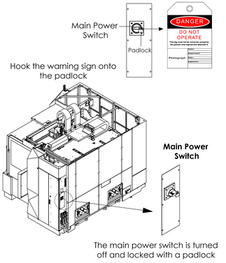
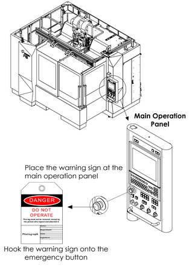

|
<< Click to Display Table of Contents >> Navigation: Chapter 1 Safety > Safety Precautions > Implementing Lock-out and Tag-out |
|
|
<< Click to Display Table of Contents >> Navigation: Chapter 1 Safety > Safety Precautions > Implementing Lock-out and Tag-out |
Lock-out consists of shutting down the power source to the machine or devices and locking it.
Example: Set the main power switch to the "OFF" position and secure it using a padlock or a lockout device such as a cover.
Tag-out consists of placing a warning tag to prevent anyone from turning ON the power supply.
Example: Place a "Do Not Operate" or "Under Maintenance" sign with the operator's name and department and indicating that machine operation is prohibited on the main power switch and main operation panel.
Lock-out/tag-out should be performed to prevent inadvertent operation and ensure operator safety.
•Performing lock-out/tag-out alone does not completely ensure operator safety. The operator must read and thoroughly understand the work procedures and safety precautions, and always be aware of potential hazards.
Each operator should perform lock-out or tag-out by himself or herself. Perform this procedure before starting the work, and release the lock and remove warning tag yourself after finishing work. Never release a lock and remove a sign without confirming with the operator or without the presence of the operator himself or herself.
•Be sure to clearly define and implement the lock-out and tag-out procedures of your company.


Figure 1.1 Implementing Lock-out & Tag-out